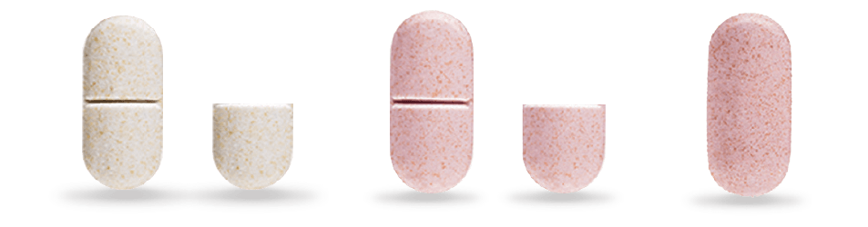

Stahl 精神药理学全景图谱
受体动力学 · 突触再生 · SNDRI 前沿拓展
✨ 核心前沿视角与神经机制
全景总网 (112点/255连线)
💎 托鲁地文拉法辛 / SNDRI 三重单胺再摄取 (5HT-NE-DA)
艾司氯胺酮 / 急性自杀干预 (MDSI) / 难治抑郁 (TRD)
🌌 阿戈美拉汀 / 褪黑素节律 (MASSA / MT1-MT2 / SCN)
神经可塑性与突触再生 (BDNF / mTOR / AMPA)
赖右苯丙胺 / 多动障碍 (ADHD 前药)
布瑞哌唑 / 卡利拉嗪 (SDAM / D3 部分激动)
 伏硫西汀 (SMS 多模式 / 海马 LTP)
普瑞巴林 (α2δ 钙通道 / 广泛性焦虑)
莱博雷生 / 达利雷生 (DORA 双食欲素)
心境稳定剂 (碳酸锂 / GSK-3β / 卡马西平)
伏硫西汀 (SMS 多模式 / 海马 LTP)
普瑞巴林 (α2δ 钙通道 / 广泛性焦虑)
莱博雷生 / 达利雷生 (DORA 双食欲素)
心境稳定剂 (碳酸锂 / GSK-3β / 卡马西平)
 苯二氮䓬类药物 (BZD / GABA-A)
苯二氮䓬类药物 (BZD / GABA-A)
伏硫西汀 (SMS 多模式 / 海马 LTP)
普瑞巴林 (α2δ 钙通道 / 广泛性焦虑)
莱博雷生 / 达利雷生 (DORA 双食欲素)
心境稳定剂 (碳酸锂 / GSK-3β / 卡马西平)
苯二氮䓬类药物 (BZD / GABA-A)
📐 排布形态
🎨 实体类别
重置
精神药物
托鲁地文拉法辛 (Toludesvenlafaxine / 若欣林)
...
🔗 关联受体靶点与神经机制网络